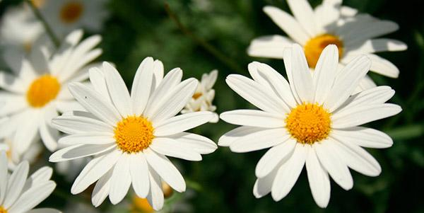

Em botânica e ecologia, flora é o conjunto de táxons de plantas
(geralmente, apenas as plantas verdes) características de
uma região, e objeto de estudo da florística.
É possível elaborar uma flora de gêneros, famílias ou,
mais normalmente, espécies botânicas de um determinado
local ou região (por exemplo: Flora Brasiliensis e Flora
Europaea).
MARGARIDAS
Atualizado em:

Pertencente à família Asteraceae e, portanto, parente dos girassóis,
crisântemos, entre outras, a margarida é uma reunião de tipos
de flores: umas formam o miolo amarelo, enquanto as outras
formam a borda esbranquiçada. Essas flores têm funções
biológicas importantes quando unidas, como a de produzir
néctar, atrair polinizadores, além de gerar e receber pólen.
Para isso, se dividem para desempenhar essas diversas
tarefas. Muitas começam a desabrochar das extremidades
em direção ao centro, assim, enquanto as flores da periferia
estão na fase feminina - durante a qual são capazes de
receber pólen -, as flores mais centrais estão na fase
masculina - na qual liberam seu próprio pólen.
Quando muitas flores estão assim reunidas,
chamamos de inflorescência.